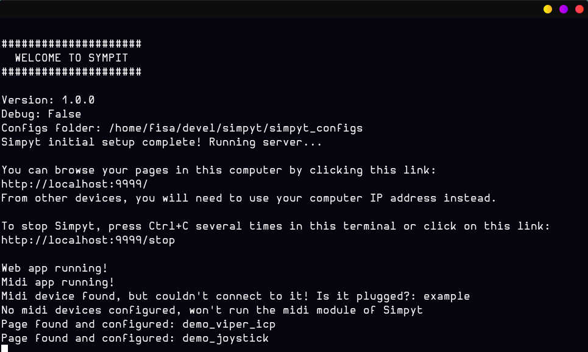
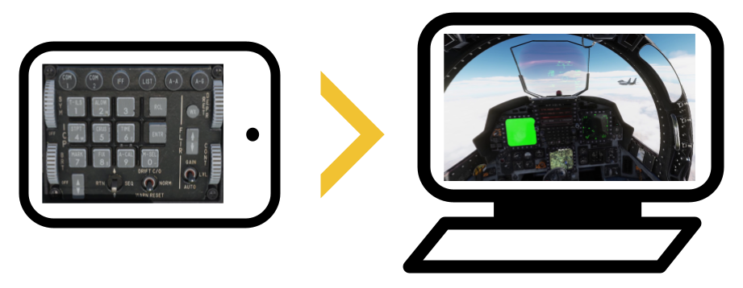
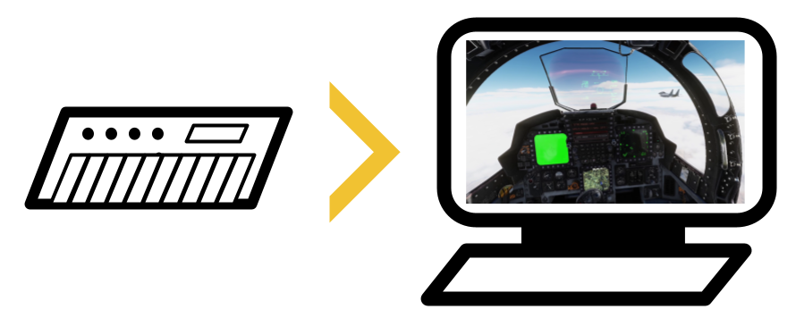

Installation
▼
- Download and install Python 3.11 (don't use 3.12 or newers! they're not yet supported). For Windows, this is the right one.
- Download the latest Simpyt.pyz release
- Run (double click) the simpyt.pyz file and browse to http://localhost:9999 in your PC, or http://YOUR_PC_IP_ADDRESS:9999/ from a cellphone or tablet
That's it! You don't even need to install anything in your phone or tablet.
The first run will take a few seconds to boot, or maybe even a minute or two. Wait until you see this message indicating that Sympit is running (the next time it should boot instantaneously):

How to use with a phone or tablet
▼

Basic steps
To use a phone or tablet as a button box, you need to:
- Define a "page" with buttons in Simpyt's configs
- Launch Simpyt.pyz in your PC
- Browse to http://YOUR_PC_IP_ADDRESS:9999/ from your phone or tablet
Button pages
The button pages are defined as files inside the simpyt_configs/pages folder. Each page is a single text file with .page extension with some basic settings, the list of buttons to show, and what they do.
To create or edit them, you can use Notepad or any code editor you like. You can have as many pages as you need and even use them at the same time from different devices. It's time to revive all those old phones :D
Example of a simple page file:
background_image: tomcat_countermeasures_pannel.png width: 200 height: 130 controls: - at: 10 50 size 5 5 action: keys ctrl shift a - at: 20 50 size 5 5 action: keys ctrl shift b
(in case this looks familiar: yes, it's yaml :D)
That page would show an image of a Tomcat cockpit pannel (which should be added in the simpyt_configs/images folder), with a couple of clickeable buttons that fire some key presses in your computer when clicked. You would map those keys to controls in your flight sim, and that's it! A working button box :)
Using them from a phone or tablet
To show the button box in a phone or tablet, just connect the device to the same wifi network than your pc and browse to http://YOUR_PC_IP_ADDRESS:9999/ (don't forget to run Simpyt.pyz in your PC before).
What else can be done
The page and buttons are fully customizable (text, color, borders, images, etc). And when using a background image with something like a screenshot of an aircraft real pannel, you can make the simpyt buttons "invisible" and just rely on the background image instead. Simpyt comes with a demo of an F-16 Viper panel configured this way.
Buttons can simulate key presses, joystick button presses, joystick axis movements, open apps, or even run full scripts of multiple actions.
Examples and full docs on the attributes of buttons and pages here.
Examples and full docs full docs on the actions they can run here.
How to use with a midi controller
▼

Basic steps
To use a midi controller as a button box, you need to:
- Define a "midi device" in Simpyt's configs
- Launch Simpyt.pyz in your PC
- Use the midi device :)
Midi devices
Midi devices are defined as files inside the simpyt_configs/midis folder. Each device is a single text file with .midi_device extension with some basic settings, the list of controls to handle, and what they do when used.
To create or edit them, you can use Notepad or any code editor you like. You can have as many devices as you need and even use them at the same time.
Example of a basic midi device file:
name: MY-PIANO-BRAND-XYZ controls: - when: note 42 surpasses 64 action: keys escape - when: control 40 between 0-127 action: joystick 1 axis 1
Thats a simple config that tries to connect to a midi device called "MY-PIANO-BRAND-XYZ" (this should be the name that the midi device has in your system when plugged in). It fires the escape key when a note is played in the piano, and simulates a virtual joystick axis when a particular knob is turned.
What else can be done
Different types of midi controls are supported and they can simulate key presses, joystick buttons or axis, open apps, or even run full scripts of actions.
Examples and full docs on the configuration of midi devices here.
Examples and full docs full docs on the actions they can run here.
Name of your device and ids of its controls
To configure a midi device in Simpyt you will need to know the name of the device and ids of the controls and notes in it. If you don't know them, you can run Simpyt in "debug" mode and it will help you figure them out.
More info here.
Get help (Discord)
▼
You can join our Discord server to ask questions or share configs!